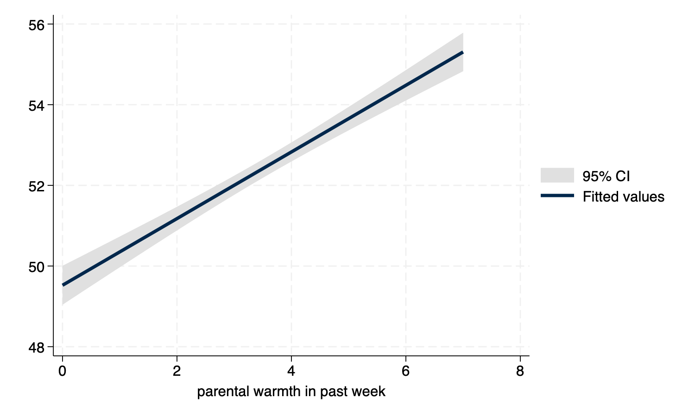
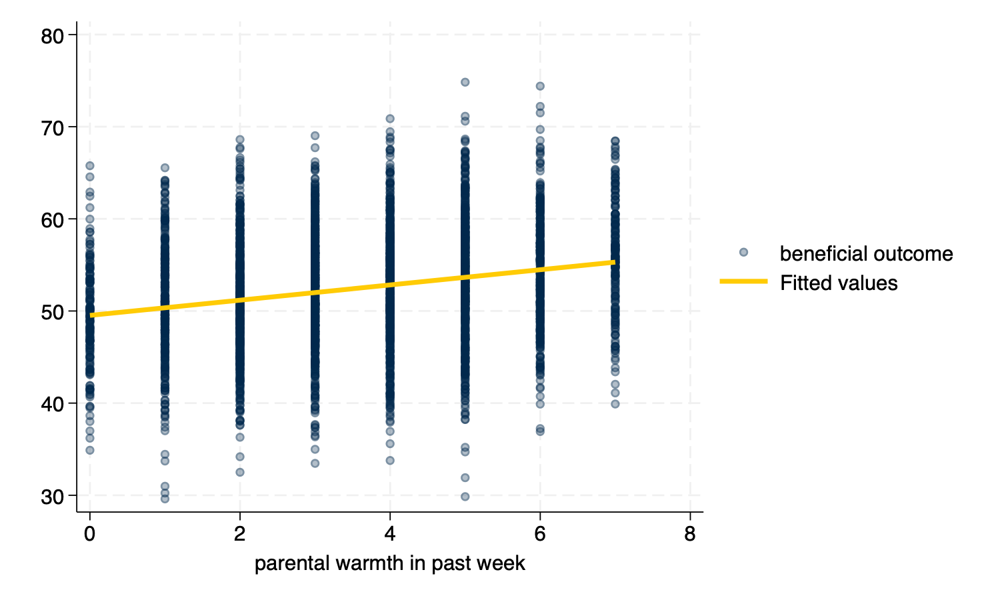
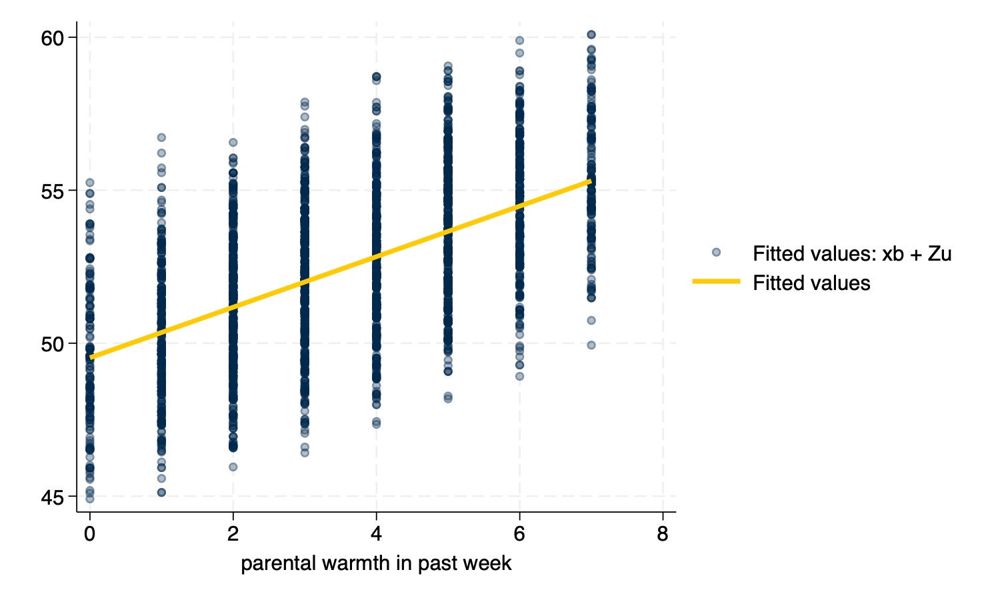

Visualizing Multilevel Models
1 Introduction
An evolving set of notes on visualizing results from multilevel models.
When this document is presented in slide show format, some slides may be long, and you may need to scroll down to see the full slide.
The examples below use the simulated_multilevel_data.dta file from Multilevel Thinking. Here is a direct link to download the data.
2 Organizing Questions
Try to think about some of the advantages and disadvantages of different approaches to visualizing multilevel models. In multilevel models, we don’t want to just control for variation, but to start to explore the variation. Put concretely:
- Some approaches use dots. Some approaches use lines. Some approaches use dots and lines.
- Some approaches use the raw unadjusted data. Other approaches use adjusted or model predicted data.
- Some approaches attempt to show the Level 2 specific regression lines; some approaches only show an average regression line.
- What approaches might work well with large numbers of Level 2 units? What approaches might work well with smaller numbers of Level 2 units?
What approach(es) do you prefer?
3 Setup
I am not terrifically fond of the default s2color graph scheme in earlier versions of Stata. Here I make use of the michigan graph scheme available at: https://agrogan1.github.io/Stata/michigan-graph-scheme/
set scheme michiganStata’s s1color scheme would also would be an option as would be Asjad Naqvi’s incredible schemepack: https://github.com/asjadnaqvi/stata-schemepack.
Throughout the tutorial, I make frequent use of the mcolor(%30) option to add some visual interest to scatterplots by adding transparency to the markers.
4 Get Data
use "https://github.com/agrogan1/multilevel-thinking/raw/main/simulate-and-analyze-multilevel-data/simulated_multilevel_data.dta", clear5 Scatterplots (twoway scatter y x)
twoway scatter outcome warmth, mcolor(%30)
graph export myscatter.png, width(1500) replacefile /Users/agrogan/Desktop/GitHub/multilevel/visualizing-MLM/myscatter.png saved as PNG format
6 Simple Linear Fit (twoway lfit y x)
twoway lfit outcome warmth
graph export mylinear.png, width(1500) replacefile /Users/agrogan/Desktop/GitHub/multilevel/visualizing-MLM/mylinear.png saved as PNG format
7 Linear Fit With Confidence Interval (twoway lfitci y x)
twoway lfitci outcome warmth
graph export mylfitci.png, width(1500) replacefile /Users/agrogan/Desktop/GitHub/multilevel/visualizing-MLM/mylfitci.png saved as PNG format
8 Combine Scatterplot and Linear Fit (twoway (scatter y x) (lfit y x))
twoway (scatter outcome warmth, mcolor(%30)) (lfit outcome warmth)
graph export myscatterlinear.png, width(1500) replacefile /Users/agrogan/Desktop/GitHub/multilevel/visualizing-MLM/myscatterlinear.png saved as PNG
format
9 Spaghetti Plots (spagplot y x, id(group))
spagplot outcome warmth, id(country)
graph export myspaghetti.png, width(1500) replacefile /Users/agrogan/Desktop/GitHub/multilevel/visualizing-MLM/myspaghetti.png saved as PNG format
10 Small Multiples (twoway y x, by(group))
Small Multiples, showing a separate graph for each group in the data, are an increasingly popular data visualization technique. Below, I build a small multiples graph using the by option in Stata. I use the aspect option to adjust the aspect ratio of the graph for better visual presentation.
twoway (scatter outcome warmth, mcolor(%30)) ///
(lfit outcome warmth), ///
by(country) aspect(1)
graph export mysmallmultiples.png, width(1500) replacefile /Users/agrogan/Desktop/GitHub/multilevel/visualizing-MLM/mysmallmultiples.png saved as PNG
format
11 Taking A Random Sample
At times, we may have too many Level 2 units to effectively display them on a spaghetti plot, or using small multiples. If this is the case, we may need to randomly sample Level 2 units. This can be difficult to accomplish as our standard sample command operates on each row, or on Level 1 units.
We can accomplish random sampling at Level 2, with a little bit of code.
set seed 3846 // random seed for reproducibility
gen randomid = runiform() // generate a random id variable
* by country (i.e. by Level 2 unit) replace the randomid
* with the first randomid for that country (Level 2 unit)
* so that every person in that country has the same random id
bysort country: replace randomid = randomid[1]
summarize randomid // descriptive statistics for random id
twoway (scatter outcome warmth, mcolor(%30)) /// scatterplot
(lfit outcome warmth) /// linear fit
if randomid < .5, /// only use a subset of randomids
by(country) aspect(1) // by country
graph export mysmallmultiples2.png, width(1500) replace(2,970 real changes made)
Variable | Obs Mean Std. dev. Min Max
-------------+---------------------------------------------------------
randomid | 3,000 .6174022 .2374704 .0733026 .9657055
file /Users/agrogan/Desktop/GitHub/multilevel/visualizing-MLM/mysmallmultiples2.png saved as PNG
format
12 Multivariate (Predicted) Relationships
A sometimes unacknowledged point is that graphs–unless we take steps to correct this–reflect unadjusted, or bivariate associations. We may sometimes wish to develop a graphs that reflect the adjusted or predicted estimates from our models.
In multilevel models, prediction is a complex question. The procedures below outline graphs that incorporate predictions using the variables, but do not include predictions that incorporate the random effects. (This will be added!)
12.1 Using Predicted Values (predict)
12.1.1 Estimate The Model
mixed outcome warmth physical_punishment i.group || country: // estimate MLMPerforming EM optimization ...
Performing gradient-based optimization:
Iteration 0: Log likelihood = -9668.0859
Iteration 1: Log likelihood = -9668.0859
Computing standard errors ...
Mixed-effects ML regression Number of obs = 3,000
Group variable: country Number of groups = 30
Obs per group:
min = 100
avg = 100.0
max = 100
Wald chi2(3) = 401.00
Log likelihood = -9668.0859 Prob > chi2 = 0.0000
-------------------------------------------------------------------------------------
outcome | Coefficient Std. err. z P>|z| [95% conf. interval]
--------------------+----------------------------------------------------------------
warmth | .961837 .0581809 16.53 0.000 .8478046 1.075869
physical_punishment | -.8457672 .0798128 -10.60 0.000 -1.002197 -.6893369
2.group | 1.084409 .2200548 4.93 0.000 .6531099 1.515709
_cons | 51.64797 .4645466 111.18 0.000 50.73748 52.55847
-------------------------------------------------------------------------------------
------------------------------------------------------------------------------
Random-effects parameters | Estimate Std. err. [95% conf. interval]
-----------------------------+------------------------------------------------
country: Identity |
var(_cons) | 3.403 .9717558 1.944438 5.955659
-----------------------------+------------------------------------------------
var(Residual) | 36.01911 .9346952 34.23295 37.89847
------------------------------------------------------------------------------
LR test vs. linear model: chibar2(01) = 200.29 Prob >= chibar2 = 0.000012.1.2 Generate Predicted Values
predict outcome_hat, fitted // predict yhat (`fitted` uses fixed AND random effects)12.1.3 Graph With twoway Syntax
twoway (scatter outcome_hat warmth, mcolor(%30)) (lfit outcome_hat warmth)
graph export mypredictedvalues.png, width(1500) replace
twoway (lfit outcome_hat warmth)
graph export mypredictedvalues2.png, width(1500) replacefile /Users/agrogan/Desktop/GitHub/multilevel/visualizing-MLM/mypredictedvalues.png saved as PNG
format
file /Users/agrogan/Desktop/GitHub/multilevel/visualizing-MLM/mypredictedvalues2.png saved as PNG
format
predict
predict With Only Linear Fit12.2 Spaghetti Plot With Predicted Values
spagplot outcome_hat warmth, id(country)
graph export myspaghetti2.png, width(1500) replacefile /Users/agrogan/Desktop/GitHub/multilevel/visualizing-MLM/myspaghetti2.png saved as PNG
format
12.3 margins and marginsplot
12.3.1 Estimate The Model
mixed outcome warmth physical_punishment i.group || country: // estimate MLMPerforming EM optimization ...
Performing gradient-based optimization:
Iteration 0: Log likelihood = -9668.0859
Iteration 1: Log likelihood = -9668.0859
Computing standard errors ...
Mixed-effects ML regression Number of obs = 3,000
Group variable: country Number of groups = 30
Obs per group:
min = 100
avg = 100.0
max = 100
Wald chi2(3) = 401.00
Log likelihood = -9668.0859 Prob > chi2 = 0.0000
-------------------------------------------------------------------------------------
outcome | Coefficient Std. err. z P>|z| [95% conf. interval]
--------------------+----------------------------------------------------------------
warmth | .961837 .0581809 16.53 0.000 .8478046 1.075869
physical_punishment | -.8457672 .0798128 -10.60 0.000 -1.002197 -.6893369
2.group | 1.084409 .2200548 4.93 0.000 .6531099 1.515709
_cons | 51.64797 .4645466 111.18 0.000 50.73748 52.55847
-------------------------------------------------------------------------------------
------------------------------------------------------------------------------
Random-effects parameters | Estimate Std. err. [95% conf. interval]
-----------------------------+------------------------------------------------
country: Identity |
var(_cons) | 3.403 .9717558 1.944438 5.955659
-----------------------------+------------------------------------------------
var(Residual) | 36.01911 .9346952 34.23295 37.89847
------------------------------------------------------------------------------
LR test vs. linear model: chibar2(01) = 200.29 Prob >= chibar2 = 0.000012.3.2 Generate Predicted Values At Specified Values With margins
margins group, at(warmth = (1 2 3 4 5 6 7)) // predictive *margins*Predictive margins Number of obs = 3,000
Expression: Linear prediction, fixed portion, predict()
1._at: warmth = 1
2._at: warmth = 2
3._at: warmth = 3
4._at: warmth = 4
5._at: warmth = 5
6._at: warmth = 6
7._at: warmth = 7
------------------------------------------------------------------------------
| Delta-method
| Margin std. err. z P>|z| [95% conf. interval]
-------------+----------------------------------------------------------------
_at#group |
1 1 | 50.4999 .3983539 126.77 0.000 49.71914 51.28066
1 2 | 51.58431 .3994365 129.14 0.000 50.80143 52.36719
2 1 | 51.46174 .3809288 135.10 0.000 50.71513 52.20834
2 2 | 52.54615 .38173 137.65 0.000 51.79797 53.29432
3 1 | 52.42357 .371884 140.97 0.000 51.6947 53.15245
3 2 | 53.50798 .3723656 143.70 0.000 52.77816 54.23781
4 1 | 53.38541 .3718315 143.57 0.000 52.65664 54.11419
4 2 | 54.46982 .3719738 146.43 0.000 53.74077 55.19888
5 1 | 54.34725 .3807751 142.73 0.000 53.60094 55.09355
5 2 | 55.43166 .3805823 145.65 0.000 54.68573 56.17759
6 1 | 55.30909 .398109 138.93 0.000 54.52881 56.08937
6 2 | 56.3935 .397607 141.83 0.000 55.6142 57.17279
7 1 | 56.27092 .4228024 133.09 0.000 55.44225 57.0996
7 2 | 57.35533 .4220306 135.90 0.000 56.52817 58.1825
------------------------------------------------------------------------------12.3.3 Graph With marginsplot
marginsplot // plot of predicted values
graph export mymarginsplot.png, width(1500) replaceVariables that uniquely identify margins: warmth group
file /Users/agrogan/Desktop/GitHub/multilevel/visualizing-MLM/mymarginsplot.png saved as PNG
format
margins and marginsplot13 Scatterplot With Linear Fit and Marginal Density Plots (twoway ...)
As another possibility, we may wish to show more of the variation, by showing the variation in the independent variable and the dependent variable along with a scatterplot and linear fit. This is a complex graph and requires a little bit of manual programming in Stata.
You could also investigate the user written program
binscatterhist(ssc install binscatterhist) which produces a similar looking graph, and automates much of this work.
13.1 Manually Generate The Densities To Plot Them Below (kdensity ...)
We generate the density for warmth at only a few points (
n(8)) since this variable has relatively few categories.
kdensity warmth, generate(warmth_x warmth_d) n(8) // manually generate outcome densities
kdensity outcome, generate(outcome_y outcome_d) // manually generate outcome densities13.2 Rescale The Densities So They Plot Well
You may have to experiment with the scaling and moving factors.
replace warmth_d = 100 * warmth_d // rescale the density so it plots well
replace outcome_d = 5 * outcome_d - .5 // rescale AND MOVE the density so it plots well
label variable outcome_y "density: beneficial outcome" // relabel y variable(8 real changes made)
(50 real changes made)
13.3 Make The Graph (twoway ...)
You may have to experiment with whether scatterplots or line plots work best for displaying the x and y densities.
twoway (scatter outcome warmth, mcolor(%10)) /// scatterplot w some transparency
(lfit outcome warmth) /// linear fit
(line warmth_d warmth_x) /// line plot of x density
(line outcome_y outcome_d), /// line plot of y density (note flipped order)
title("Outcome by Warmth") /// title
ytitle("beneficial outcome") /// manual ytitle
xtitle("parental warmth") /// manual xtitle
legend(position(6) rows(2) ) /// legend at bottom; 2 rows
xlabel(0 1 2 3 4 5 6 7) /// manual x labels
name(mynewscatter, replace)
graph export mynewscatter.png, width(1500) replacefile /Users/agrogan/Desktop/GitHub/multilevel/visualizing-MLM/mynewscatter.png saved as PNG
format